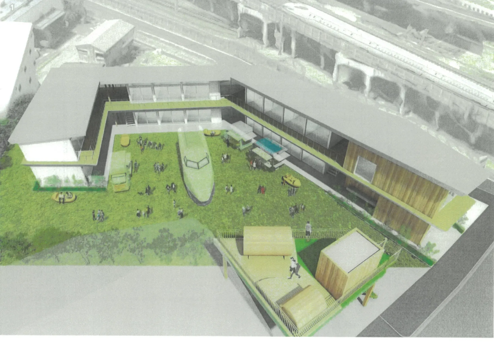
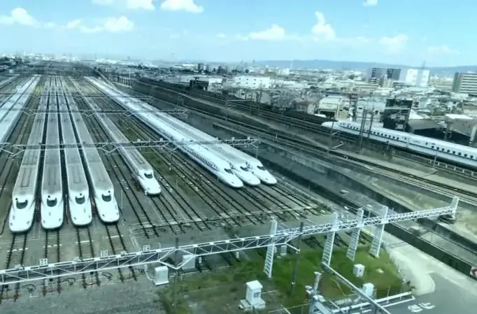
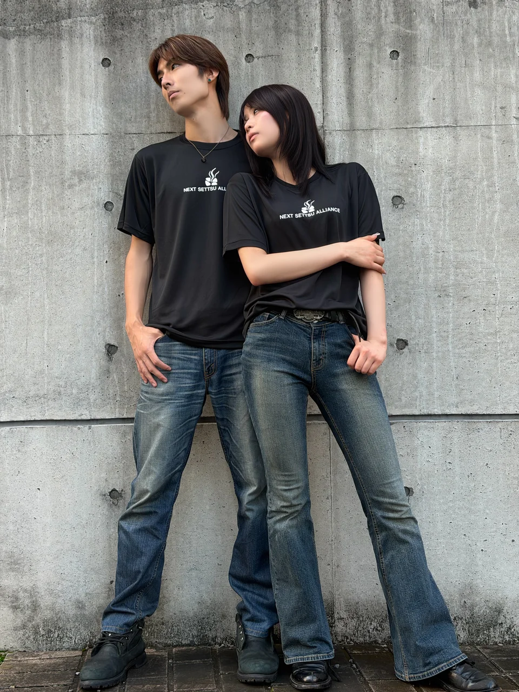
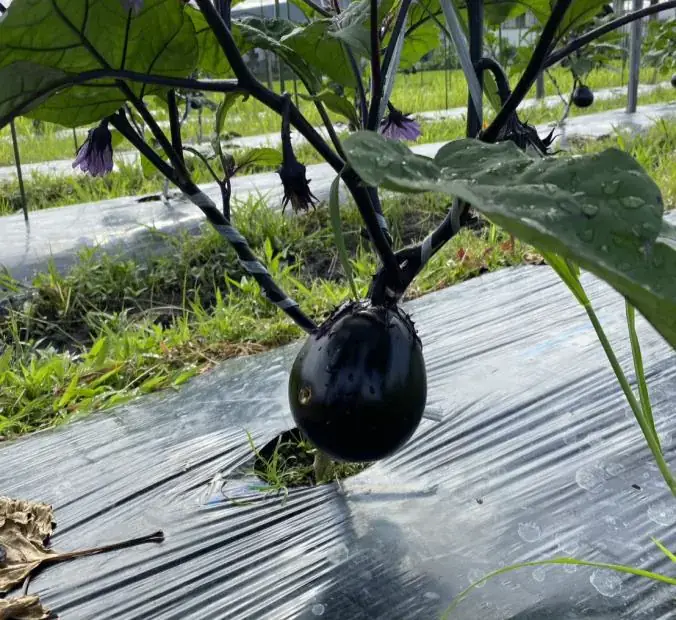

鳥飼車両基地
ガタゴトと響く鉄音、どこまでも続くレール、息づく日常。




サウナを入口に、
始まりは、一人の大工職人の「何もないなら創ればいい」という言葉でした。その思いに共感した学生、企業、地域の人が集まり、一人の挑戦が、みんなの挑戦になりました。
街を変えるのは、ひとつの会社でも、ひとつの団体でもありません。企業・学生・大学・地域の人が、それぞれの得意を持ち寄る連合体です。

スタバも、コストコも、道の駅もない。
新幹線がただ通り過ぎていくだけの街。
訪れる理由がないのなら、自分たちでつくればいい。私たちが選んだきっかけは、サウナでした。
汗を流し、息を整え、人が自然と交差する拠点。舞台は、新幹線車両基地のすぐそば。名前は「避ス地」。
避ス地 未知の駅 摂津サウナ
摂津が変わる、避ス地で変える。


誇れる風景も、確かな味も、ここにはすでにありました。あとは、それらを結びつけるだけです。
ガタゴトと響く鉄音、どこまでも続くレール、息づく日常。

丁寧に育てられ、地元でも知る人ぞ知る摂津の味。
CROWDFUNDING 2026.07.31 — 10.15
目標の1,000万円を超えるご支援をいただき、
クラウドファンディングは10月15日に終了しました。
ここからが、避ス地づくりの本当のスタートです。
2026年12月に着工し、2027年7月の完成を目指します。
ここで培ったモデルを、同じ課題を抱える全国の地域へも広げていきます。その最初の一歩を、一緒に踏み出す仲間を探しています。
Tシャツで応援する NSA DRY Tシャツ（2,850円）のページへ移動しますプロジェクトへのご質問・参画のご相談は、下記フォームよりお気軽にお問い合わせください。
※クラウドファンディングのリターンに関するお問い合わせは、CAMPFIRE内のメッセージからも受け付けております。